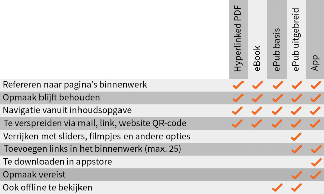

-
Gratis handleiding
Wilt u meer informatie en tips?
Vraag dan hier gratis onze handleiding aan. - Offerte
- Contact
-
088-374 67 77

-

Wilt u meer informatie en tips?
Vraag dan hier gratis onze handleiding aan.
Proefschriftmaken maakt onderscheid tussen vijf vormen van digitale publicaties: de hyperlinked PDF, het eBook, de ePub Basis, de ePub Uitgebreid en de app.
Wanneer u ervoor kiest uw proefschrift te publiceren als hyperlinked PDF, ontvangt u een PDF met een zeer praktische verrijking.
Zo wordt de inhoudsopgave voorzien van hyperlinks. Dankzij deze links wordt de lezer van het proefschrift middels
de hyperlinked inhoudsopgave gemakkelijk naar de juiste pagina’s gestuurd.
Daarbij kan de kaft als eerste pagina en de achterkant als laatste pagina in het boek worden opgenomen.
Benieuwd naar een voorbeeld? Deze kunt u hier downloaden.
Het proefschrift als eBook kan gezien worden als een online bladerboek. Net zoals bij een echt boek, kan gebladerd worden door dit boek. Dit kan door op het pijltje naar de volgende twee bladzijden te klikken of door op de gewenste pagina in het linker menu te klikken.
Benieuwd naar een voorbeeld? Deze kunt u hier bekijken.
Het grote voordeel van een ePub is dat deze geopend kan worden in iBooks of Adobe Digital Editions
op een Apple- of Google tablet.
De ePub heeft een vaste opmaak, wat betekent dat de opmaak zich niet aanpast
aan het scherm. Dit is belangrijk aangezien het proefschrift bestaat uit verwijzingen naar pagina’s, tabellen en
afbeeldingen.
In de ePub basis kunt u eenvoudig door het document navigeren met de klikbare inhoudsopgave.
U kunt ervoor kiezen om de ePub standaard mogelijkheid uit te breiden met diverse verrijkingen.
Proefschriftmaken kan de gehele opmaak van uw ePub verzorgen.
Daarbij kunt u ervoor kiezen om Proefschriftmaken diverse aanvullingen toe te laten voegen zoals
interne en externe links, foto’s als slideshow, video’s, formulieren en animaties zoals roll overs.
Benieuwd naar een voorbeeld? Deze kunt u hier downloaden.
Op een Mac is de ePub te openen in iBooks (hier te downloaden)
Op een android/ Windows is de ePub te openen met Adobe Digital Editions (hier te downloaden)
De laatste optie is het publiceren van het proefschrift als app.
Uw app wordt vormgegeven als applicatie. Dit betekent dat uw proefschrift als app te downloaden is
via de Apple store voor zowel smartphones als tablets.
Uw proefschrift krijgt een icoon met daarachter een beginpagina gevolgd door uw proefschrift als boek.
Ook bij deze innovatieve optie linkt de inhoudsopgave naar de juiste hoofdstukken.
